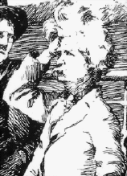
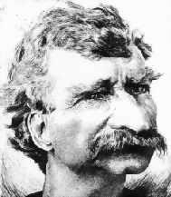
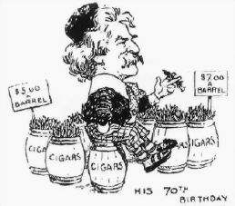
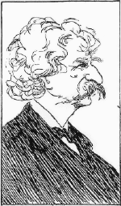

Life: 22 March
1883--
MT's earliest appearance in the magazine
was as part of a series called "Biographettes."
The "description" that accompanies this caricature
doesn't show the affection for MT that will be
evident
later, but it does indicate many of the "trademarks"
for which MT was already well-known,
including his devotion to the petrified truth.
Life: 9 August
1883--
John L. Sullivan held the world heavyweight boxing
title at this time. There actually was a "Concord
School of Philosophy." Its existence was mentioned
by a number of commentators, including MT, when
the Concord Library banned Huck Finn in
1885.
Life: 27 February
1890--
This strange picture is part of an irregular series
called "Life's Gallery of Beauties." Number 29 was
the Rev. T. DeWitt Talmage. According to Budd,
Orion Clemens, MT's brother, "thought the sabots
and black cat...referred to touches in A
Connecticut
Yankee favorable to Henry George's socialism.
Life: 27 May
1897--
MT is advertised here as one of "Our
Over-Advertised Authors." Among the other writers
in that category are (from the left) Howells, George
Washington Cable, James Whitcomb Riley, Mary E.
Wilkins [Freeman], H. Rider Haggard, Frances Hodgson
Burnett, and Joel Chandler Harris.
Life: 26 May
1898--
This surprisingly prim MT is participating in
"Taking a 'Turn'; or, The Literary Cakewalk."
His partner is Rev. Hepworth. The line is led by
Howells and Frank Stockton; other dancers include
Stephen Crane, Bret Harte, Mary E. Wilkins [Freeman]
and Frances H. Burnett.
Life: 18 August
1898--
This full-page image -- more tribute than
caricature -- is atypically big, but the prose
that accompanies it is characteristic of the
affection that comes increasingly to control
America's idea of "Mark Twain."
Life: 2 March
1899--
Here "MT" appears as "The American Humorist" in
Life's monthly feature, "Popular Pets." (Others in
the
series include Jack Hob and Robert Ingersoll.)
By this time MT's mane has become a frequently
"quoted" aspect of his character. As the magazine
put it in a later issue: MT's "principal recreation
is not parting his hair."
Life: 28 February
1901--
Here is "St. Mark," the "American Lion." The
reference is undoubtedly to MT's essay,
"To the Person Sitting in Darkness": his attack on
imperialism that had just appeared in the
February North American Review.
Life: 24 December
1903--
The suggestion of MT's brave American nobility here,
though referenced to his novel about Hank Morgan,
is obviously not meant sarcastically, or even
comically. I'm not sure, however, what prompted it
at this time. In October MT and his family had
sailed for Italy, but they did not stop in
England.
Life: 21 December
1905--
MT's 70th birthday, included in this issue of
Life
among December events, had taken place on
November 30. It was widely celebrated in
the press, and this was not the only graphic
tribute to the occasion that featured cigars
as a crucial part of MT's image.
Life: 5 July
1906--
MT here is included among "Things We See Advertised,"
along with Howells, "Mr. Dooley" (Finley Peter Dunne)
and "G.A." The advertising Life had seen for MT
was
perhaps connected with the installments of his
autobiography that were to begin in The North
American Review in September.
Life: 31 January
1907--
This lovingly drawn caricature, which now includes
the white suit MT had begun wearing that winter,
suggests how Life had come to see him. The
"biographette" that accompanies the sketch ends
"God save the Mark!"
Life: 27 June
1907--
Readers probably knew without reading the caption
whose coat of arms this was. The cigars,
the white suit, the steamboat wheel, the lifestory
that went on and on without even beginning
to bore anyone -- all added up to MT.
Life: 29 August
1907--
MT was awarded an honorary Litt.D. degree by Oxford
in June, 1907. This event was also widely
(and favorably, even delightedly) reported in the
press.
Here the great honor is also a kind of joke
that Life and its readers can enjoy with
the humorist. (In the November 28 issue, the magazine
depicted MT in his Oxford gown in a display titled
"For These Things We Are Grateful.") |